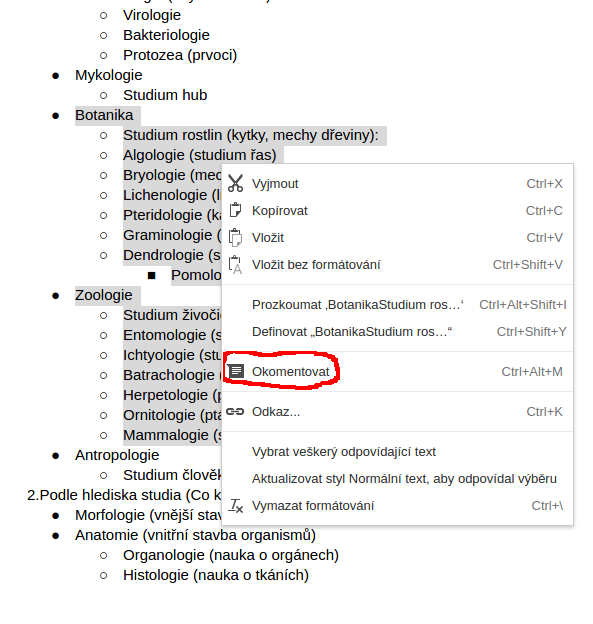
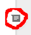
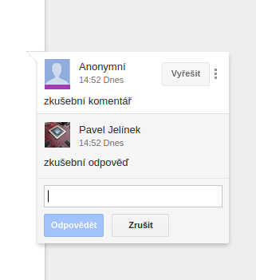
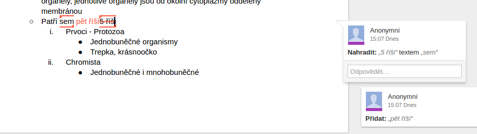
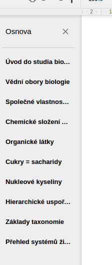
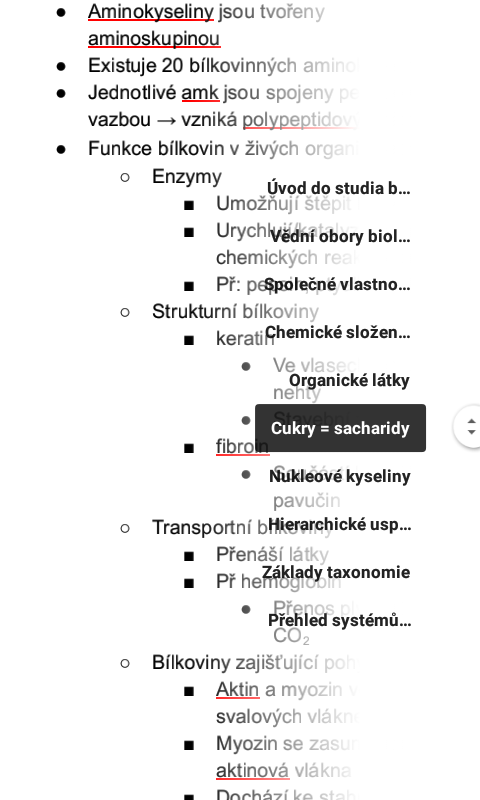
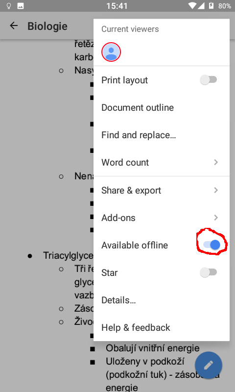
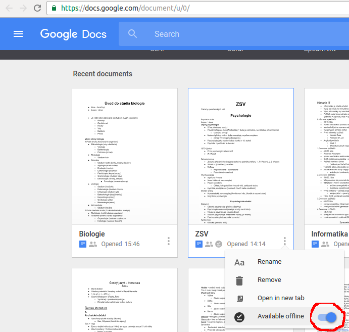
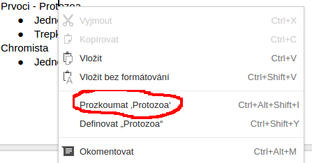
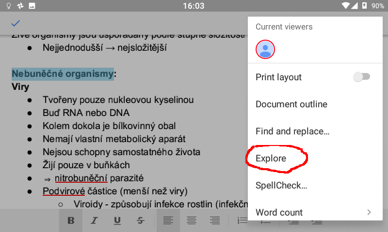

Tento návod vznikl za účelem lepšího pochopení systému zápisů. Mobilní aplikace pro správné zobrazení a možnost
editace na mobilu:
Dokumenty Google (Google Play,
App Store)
Potřebujeme, aby se Zápisy zdokonalily. Můžete pomoci opravováním chyb, vkládáním návrhů, ...
- Systém komentářů
Neváhejte a komentujte, potřebujeme zpětnou vazbu.



Podobným systémem lze komentovat i na mobilu.
- Navrhování úprav
Pokud chcete něco hned opravit, tak to bez obav přepište.

Po napsání návrhu přijde správcům oznámení a situaci vyřeší.
Bylo by super, kdybyste byli přihlášeni Google účtem (aby návrhy nebyly anonymní).
- Osnova
Pro snadnější orientaci ve velkých souborech (př archivy).


-
Dokumenty lze zpřístupnit
offline
(pak se budou samy aktualizovat - při připojení na internet):


- Další tipy a triky
-
Slova nebo části textu můžete "prozkoumat" (opět funguje i v nabídce na mobilu)
a případně můžete vložit související obrázky:


-
Pokud se vám na mobilu nevejde tabulka nebo obrázek (také nemám rád posouvání ze strany na stranu), zkuste režim na šířku.
-
Upravovat může více lidí naráz.
-
Pomocí text-to-speech modulu lze dokumenty poslouchat (nutné zapnout režim usnadnění).
-
Hledáme další správce, jestli chcete, ozvěte se, přidáme vám potřebná oprávnění.